|
|
|
Nr. 10: Ein Habbo sagt etwas
Inhalt:
1. Einführung
2. Ein Habbo sagt etwas
3. Ein Bot sagt etwas
4. Ein Haustier sagt etwas
5. Ein Wired/Möbel sagt etwas?
1. Einführung
Effekte können ausgelöst werden, wenn ein Habbo/Bot/Haustier etwas sagt. Mit Wireds und sogar mit bestimmten Möbeln lassen sich Nachrichten erzeugen, die das "Sagt-etwas" Wired auslösen können. In diesem Tutorial wird gezeigt, wie “Ein Habbo sagt etwas” Wired auf unterschiedlicher Weise ausgelöst werden kann und welche interessanten Fakten es alles darüber gibt.
2. Ein Habbo sagt etwas
In erster Linie wird das Wired durch einen Habbo ausgelöst. Dabei wird eingestellt, was jemand sagen muss, damit ein Effekt ausgelöst wird.
Verwendung: Unter “Was gesagt wird:” ist eine Zeile, in die man das Wort oder den Satz reinschreiben kann.
Inhalt:
1. Einführung
2. Ein Habbo sagt etwas
3. Ein Bot sagt etwas
4. Ein Haustier sagt etwas
5. Ein Wired/Möbel sagt etwas?
1. Einführung
Effekte können ausgelöst werden, wenn ein Habbo/Bot/Haustier etwas sagt. Mit Wireds und sogar mit bestimmten Möbeln lassen sich Nachrichten erzeugen, die das "Sagt-etwas" Wired auslösen können. In diesem Tutorial wird gezeigt, wie “Ein Habbo sagt etwas” Wired auf unterschiedlicher Weise ausgelöst werden kann und welche interessanten Fakten es alles darüber gibt.
2. Ein Habbo sagt etwas
In erster Linie wird das Wired durch einen Habbo ausgelöst. Dabei wird eingestellt, was jemand sagen muss, damit ein Effekt ausgelöst wird.
Verwendung: Unter “Was gesagt wird:” ist eine Zeile, in die man das Wort oder den Satz reinschreiben kann.
Buchstaben, Zahlen, Sonderzeichen außer eine Leerstelle allein sind erlaubt. Oft werden einfache Wörter als Code-Wörter verwendet, damit andere ohne Rechte sie nicht vergessen. Um zu verhindern, dass nicht jeder den Effekt versehentlich auslöst, werden beispielsweise Sonderzeichen davor, dahinter oder dazwischen hinzugefügt: z. B. runter!, #hoch, tele&port etc. Es muss mindestens 1 Zeichen (kein Leerzeichen!) gesetzt werden, maximal können 100 Zeichen gespeichert werden. Zwischen den Zeichen können dann Leerzeichen gesetzt werden. Die Groß- und Kleinschreibung wird und muss nicht beachtet werden.
Bei “Auslösenden Habbo auswählen” kann eingestellt werden, ob das Wired auf alle User reagiert oder nur beim Raumbesitzer.
Bei “Auslösenden Habbo auswählen” kann eingestellt werden, ob das Wired auf alle User reagiert oder nur beim Raumbesitzer.
Alle anderen (Admins, User mit Deko-Rechten), die im Raum Wireds einstellen können, werden zwar an dieser Stelle ihren Habbonamen sehen, aber leider betrifft es trotzdem nur den Raumbesitzer (möglicherweise war es früher so, dass das geklappt hat und man selbst nur auslösen konnte und vielleicht wird Habbo irgendwann diese Funktion möglich machen - wer weiß). Wie der Auslöser genutzt werden kann, wird jetzt gezeigt.
Ziel: Ein Habbo soll teleportiert werden, indem er ein Code-Wort sagt.
Stapel:
Ein Habbo sagt etwas; Wort: "!tele!"
+ Zu Möbelstück teleportieren; fixiert auf Druckplatte o.ä.
Ziel: Ein Habbo soll teleportiert werden, indem er ein Code-Wort sagt.
Stapel:
Ein Habbo sagt etwas; Wort: "!tele!"
+ Zu Möbelstück teleportieren; fixiert auf Druckplatte o.ä.
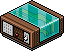
WIRED Auslöser: Ein Habbo sagt etwas
|
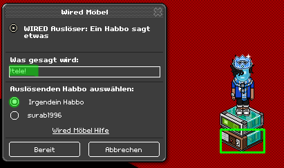 Das Wort "!tele!" löst den Effekt aus
|
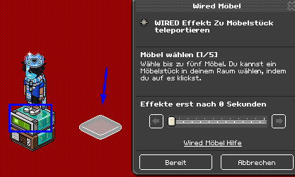 Der Habbo wird zur Platte teleportiert
|
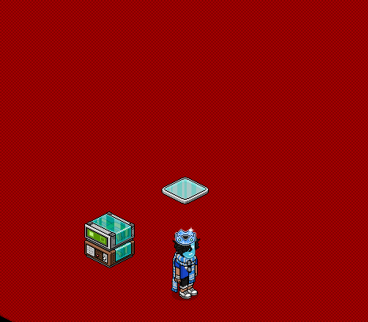
Das Ergebnis
Wenn genau das gesagt wurde, was im Sagt-etwas Wired drinsteht, dann wird die Sprechblase vom auslösenden Habbo in Kursiv und im Grauton angezeigt wie beim Flüstern. Das bedeutet, nur der auslösende Habbo sieht, was er geschrieben hat.
Das Sagt-etwas Wired erkennt das auslösende Wort auch, wenn es mit anderen Zeichen verbunden ist. Daher muss man aufpassen, wie man es einstellt. Zum Beispiel werden die Wörter Outfit oder About (abcoutabc dann natürlich auch) das Wired auslösen, wenn das Wort "out" drinsteht. Selbst, wenn das Wort (passiert häufiger mit Zahlen) beim Senden durch "bobba" zensiert wird, löst das Wired aus. Jedoch nicht dann, wenn im Wired das Wort zensiert wurde (dann reagiert das Wired lustigerweise auf das Wort "bobba"). Bei Commands wie z. B. :sit, :idle, :yyxxabxa usw. wird das Wired ebenfalls nicht reagieren.
3. Ein Bot sagt etwas
Auch Bots können etwas sagen und Auslöser sein. Ein Bot kann nur in einem Raum abgestellt werden, der einem selbst gehört. Maximal können 10 Bots im Raum vorhanden sein. Die Funktion “Chatter einrichten” wurde bereits im folgenden Tutorial umfassend erklärt, dieses sollte vorher aufjedenfall angesehen werden: Bot Tutorial: Chatter einrichten.
In der Chat-Textquelle müssen die Zeichen stehen, welche auch im Sagt-etwas Wired stehen.
Das Sagt-etwas Wired erkennt das auslösende Wort auch, wenn es mit anderen Zeichen verbunden ist. Daher muss man aufpassen, wie man es einstellt. Zum Beispiel werden die Wörter Outfit oder About (abcoutabc dann natürlich auch) das Wired auslösen, wenn das Wort "out" drinsteht. Selbst, wenn das Wort (passiert häufiger mit Zahlen) beim Senden durch "bobba" zensiert wird, löst das Wired aus. Jedoch nicht dann, wenn im Wired das Wort zensiert wurde (dann reagiert das Wired lustigerweise auf das Wort "bobba"). Bei Commands wie z. B. :sit, :idle, :yyxxabxa usw. wird das Wired ebenfalls nicht reagieren.
3. Ein Bot sagt etwas
Auch Bots können etwas sagen und Auslöser sein. Ein Bot kann nur in einem Raum abgestellt werden, der einem selbst gehört. Maximal können 10 Bots im Raum vorhanden sein. Die Funktion “Chatter einrichten” wurde bereits im folgenden Tutorial umfassend erklärt, dieses sollte vorher aufjedenfall angesehen werden: Bot Tutorial: Chatter einrichten.
In der Chat-Textquelle müssen die Zeichen stehen, welche auch im Sagt-etwas Wired stehen.
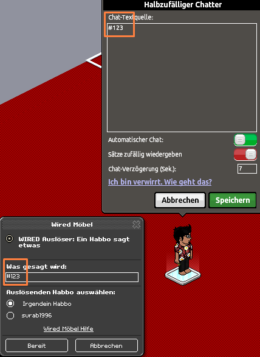
Der Bot wird jede 7. Sekunde das Sagt-etwas Wired auslösen
Ist der "Automatische Chat" eingeschaltet, wird der Bot seine Zeichen wiederholen. Die "Chat-Verzögerung" bestimmt nach wie viel Sekunden die nächste Nachricht erscheinen soll. Damit kann man eine Dauerschleife bauen. Der Bot wird nach der Einstellung jede 7. Sekunde teleportiert. Achtung: Die Zeitabstände sind nicht immer ganz genau gleich! Bots können ähnlich wie User Wireds auslösen, so lassen sie sich gut kontrollieren.
Statt Dauerschleifen, oder andere kreative Ideen, wird das Sagt-etwas Wired in Verbindung mit Bots dafür verwendet, dass man sie stummt. Meistens werden Kellner-/Dienstbots gestummt, da sie am meisten etwas automatisch sagen (und am meisten spammen). Dabei ist es wichtig zu wissen, wie nur der Bot gestummt werden kann, ohne Habbo User zu stummen. Zunächst werden alle Vokale (a, e, i, o, u) einzeln in Sagt-etwas Wireds geschrieben, da jedes deutsche Wort mindestens eines dieser Buchstaben enthält.

Wird ein Vokal gesagt, fangen die Wireds das Gesagte auf
Dadurch wird alles, was der Bot sagt, gestummt. Noch wird aber jeder gestummt, der versucht, ein Wort zu senden. Deshalb muss der Stapel eingeschränkt werden mithilfe folgender Bedingung:
Wenn der Bot in einem bestimmten Bereich eingesperrt bleibt, dann ist diese Bedingung genau richtig. Nur Auslösende, die auf den in der Bedingung ausgewählten Möbel stehen, können den Stapel auslösen.
In diesem Fall haben wir ein Stapel, der funktioniert ohne dass ein Effekt-Wired gebraucht wird.
4. Ein Haustier sagt etwas
Haustiere können das Sagt-etwas Wired auslösen und wie Bots dadurch gestummt werden. Mit der Einstellung, die oben gezeigt wurde, können nur fünf Möbel ausgewählt werden, wo die Stummfunktion aktiviert ist. Mehrere "Auslösender-Habbo" Bedingungen funktionieren leider nicht in einem Stapel, da der auslösende Habbo logischerweise nur an einem Ort gleichzeitig sein kann (im fortgeschrittenen Teil wird darauf noch näher eingegangen). Um einen größeren Mute-Bereich zu bauen, können statt 1 x 1 Böden auch 3 x 3 oder 4 x 4 Böden verwendet werden.
4. Ein Haustier sagt etwas
Haustiere können das Sagt-etwas Wired auslösen und wie Bots dadurch gestummt werden. Mit der Einstellung, die oben gezeigt wurde, können nur fünf Möbel ausgewählt werden, wo die Stummfunktion aktiviert ist. Mehrere "Auslösender-Habbo" Bedingungen funktionieren leider nicht in einem Stapel, da der auslösende Habbo logischerweise nur an einem Ort gleichzeitig sein kann (im fortgeschrittenen Teil wird darauf noch näher eingegangen). Um einen größeren Mute-Bereich zu bauen, können statt 1 x 1 Böden auch 3 x 3 oder 4 x 4 Böden verwendet werden.
|
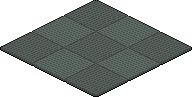 3 x 3 Boden "Büroteppich"
|
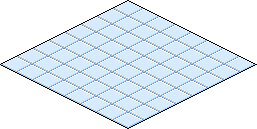 4 x 4 Boden "Blauer Fliesenboden"
|
Dann sind es nicht nur 5 Felder, sondern bei fünf 4 x 4 Böden sogar 80 Felder. Optisch können die Böden dann mit anderen schöneren Böden abgedeckt werden. Falls man die Haustiere oder Bots im ganzen Raum herumlaufen lassen möchte, kann man auch die Sätze (oder Halbsätze) ins Sagt-etwas tun. Die Wahrscheinlichkeit, dass jemand genau solche Sätze 1:1 sagen wird, ist sehr gering, daher kann das sehr gut funktionieren.
Gleichzeitigkeitsproblem - Einblick in die Wired-Forschung
Wichtig zu wissen ist, dass wenn es zur selben Zeit mehrere auslösende "Charaktere" (Habbos, Bots, Tiere) gibt, nicht alles, was sie sagen, immer komplett abgefangen wird. Es kommt auf die Einstellung an. Es ist immer zu berücksichtigen, dass ein Wired zur selben (oder fast selben) Zeit nur für einen Charakter zuständig sein kann. Beispiel: wenn zwei User gleichzeitig "Exit" sagen, wird nur einer von beiden das Sagt-etwas auslösen. Der andere wird das Wort ganz normal sagen, da das Wired blockiert ist. Erst nach 0,5 s ist das Wired wieder verwendbar.
Wichtig zu wissen ist, dass wenn es zur selben Zeit mehrere auslösende "Charaktere" (Habbos, Bots, Tiere) gibt, nicht alles, was sie sagen, immer komplett abgefangen wird. Es kommt auf die Einstellung an. Es ist immer zu berücksichtigen, dass ein Wired zur selben (oder fast selben) Zeit nur für einen Charakter zuständig sein kann. Beispiel: wenn zwei User gleichzeitig "Exit" sagen, wird nur einer von beiden das Sagt-etwas auslösen. Der andere wird das Wort ganz normal sagen, da das Wired blockiert ist. Erst nach 0,5 s ist das Wired wieder verwendbar.
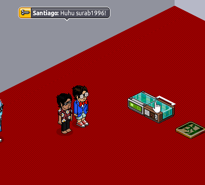
Zwei Bots sagen gleichzeitig Exit aber nur einer (zufällig) löst aus
Liegen mehrere Sagt-etwas Wireds in einem Stapel zusammen wie im folgenden Bild, dann werden mehrere auslösende Charaktere gleichzeitig erfasst. So können auch mehrere Haustiere zusammen gemutet werden, wenn sie zur gleichen Zeit sprechen.
Wenn z. B. ein User alle Vokale aufeinmal sendet, wird nur ein Sagt-etwas im Stapel aktiv. Wären die Sagt-etwas verteilt, würden alle ausgelöst werden (siehe Exit und EDW > Hast du gewusst?). Das wäre aber für diesen Fall sehr schlecht, da dann mehrere Sagt-etwas Wireds nur durch einen Charakter blockiert werden würden.
|
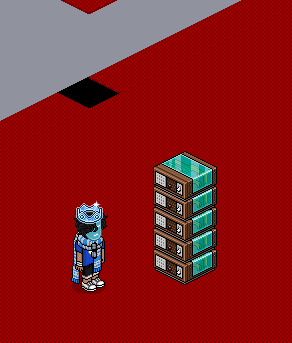 Ein Habbo kann nicht mehrere Sagt-etwas Wireds in einem Stapel gleichzeitig auslösen
|
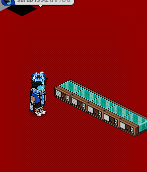 Ein Habbo kann aber mehrere einzeln gestapelte Sagt-etwas Wireds gleichzeitig auslösen
|
Würden jetzt fünf Charaktere jeweils alle Vokale gleichzeitig sagen, würden alle gemutet werden, wenn die Sagt-etwas Wireds in einem Stapel zusammenliegen. Das Gif zeigt, wie fünf Bots alle zusammen a o u i e sagen und die Sagt-etwas Wireds alle Nachrichten abfängt. In jedem Sagt-etwas Wired ist ein anderer Vokal gespeichert (siehe Bild oben)
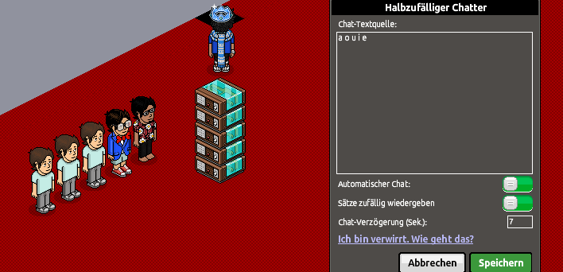
Alles Gesagte wird vom Sagt-etwas-Stapel erfasst
Erst, wenn eine 6. "Person" hinzukommt und auch in der Sekunde nur ein Vokal nennt, dann wird einer der sechs in diesem Moment nicht gemutet (da nur 5 Sagt-etwas Wireds laufen). Die Einstellung funktioniert sogar dann, wenn in allen Sagt-etwas Wireds das Gleiche drin steht und die auslösenden Charaktere dieses Wort alle gleichzeitig sagen. Ein Stapel kann nämlich nicht von einem Charakter zur exakt selben Zeit mehrfach ausgeführt werden. Dem Auslösenden wird quasi ein Sagt-etwas zugeordnet und dieses Sagt-etwas Wired ist somit blockiert. Die restlichen Wireds nehmen dann die übrigen Charaktere auf. Das bedeutet, dass Nachrichten, die in derselben Sekunde gesendet werden, nie ganz genau gleichzeitig ausgegeben werden, sondern es eine Reihenfolge gibt und sich alles in Millisekunden abspielt. Es lässt sich in gewisser Weise sogar praktisch beweisen, dass diese Schlussfolgerung in die richtige Richtung geht und somit auch etwas erkennen, wie die Wireds programmiert sind. "Gleichzeitigkeitsprobleme" werden mehr im erweiterten Teil behandelt. In dieser Lektion sollte dies nur einen kleinen Einblick in die Wired-Forschung geben.
Wie man sieht, gibt es mehrere Einstellungen, um viele Charaktere zu stummen. Je nachdem, wie man es haben möchte, muss man schauen was am besten funktioniert.
5. Ein Wired/Möbel sagt etwas?
Das "Nachricht anzeigen" Wired wird verwendet, um einen Habbo eine Nachricht anzuzeigen, die nur er sehen kann. Darin können ebenfalls max. 100 Zeichen gesetzt werden (sogar ein Leerzeichen allein!).
5. Ein Wired/Möbel sagt etwas?
Das "Nachricht anzeigen" Wired wird verwendet, um einen Habbo eine Nachricht anzuzeigen, die nur er sehen kann. Darin können ebenfalls max. 100 Zeichen gesetzt werden (sogar ein Leerzeichen allein!).
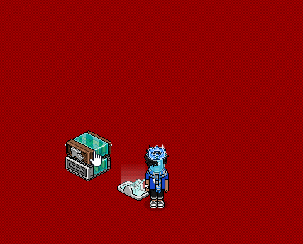
Leerzeichen als Nachricht
Leerzeichen-Nachrichten können übrigens nützlich sein, um User AFK im Raum zu setzen. Dabei erhalten sie ca. alle 5 Min eine sogenannte AFK-Nachricht (siehe Nachricht anzeigen > Hast du gewusst?).
Das "Nachricht"-Wired löst das Sagt-etwas Wired aus. Es ist also zu beachten, was genau im Nachricht-Wired stehen soll. Möchte man z. B. hinweisen, dass man mit "exit" einen Bereich verlassen kann, ohne dass der Habbo "exit" auslöst, dann sollte im Nachricht-Wired das Wort "exit" mit einem Punkt o. ä. abgetrennt werden ("exi.t").
|
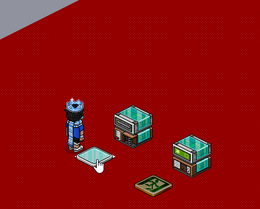 Nachricht-Wired löst Sagt-etwas aus
|
Die Nachricht kommt also aus dem Habbo, so als würde er sie selbst sagen. Das Wired zwingt den Habbo sozusagen zu sprechen. Falls die Nachricht ein Sagt-etwas mit Absicht auslösen soll, sollte man wissen, dass dies in bestimmten Einstellungen zu einer Nachrichtenschleife führen kann, die man nicht so einfach wieder los wird. Das passiert zwar eher selten per Zufall, aber es wäre gut, so etwas vorher zu wissen. Eine Nachrichtenschleife kann wie im folgenden Gif aufgebaut sein.
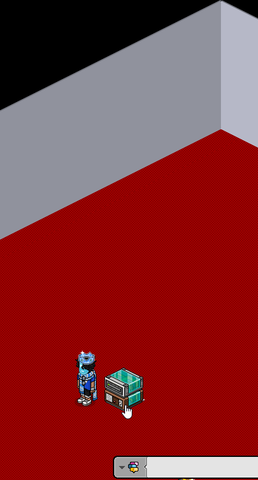
Die einfachste Einstellung für eine Nachrichtenschleife
Die Schleife kommt zustande, wenn die Effektzeit hoch genug ist (ab 1 s). Wenn sie zu niedrig ist (0,5 s), dann wird anfangs noch ein paar Mal ausgelöst, bis das Spamlimit (ist unabhängig vom Spamschutz) keine weiteren Nachrichten mehr erlaubt.
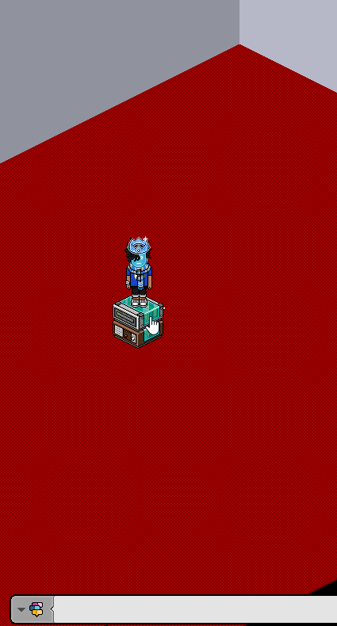
Jede 0,5 s erhält der User eine Nachricht, das sind in 3,5 s sieben Nachrichten
In einem Zeitraum von nur 0,5 Sekunden sind maximal sieben Nachrichten (7 x Sprechblasen) möglich, danach werden ganze 5 Sekunden Pause benötigt, um das noch einmal zu schaffen.
In einem Zeitraum von nur 0,5 Sekunden sind maximal sieben Nachrichten (7 x Sprechblasen) möglich, danach werden ganze 5 Sekunden Pause benötigt, um das noch einmal zu schaffen.
|
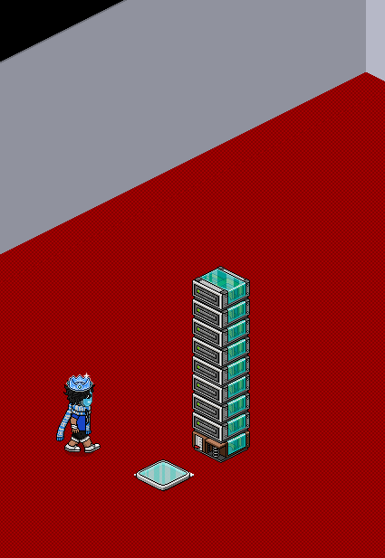 Max. sieben Nachrichten sind aufeinmal möglich, alle übrigen Nachrichten werden verschluckt
|
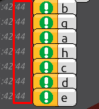 Alle sieben Nachrichten wurden in der 44. Sekunde ausgegeben
|
In den 5 Sekunden-Zeitraum können aber auch 9 Nachrichten ausgegeben werden, wenn die Nachrichten richtig verteilt sind. Jedenfalls, wenn man pro Sekunde eine Nachricht ausgibt, kann man sicher sein, dass nichts "verschluckt" wird. Über das Nachrichten-Wired wird der Spamschutz (was nicht dasselbe ist wie das Spamlimit) umgangen. Das Gleiche funktioniert auch, wenn man sich selbst anflüstert (schreibe in der Chatbox "Flüstern <Username>" Das F in Flüstern muss groß geschrieben werden und der <Username> muss deinem Habbonamen genau entsprechen).
|
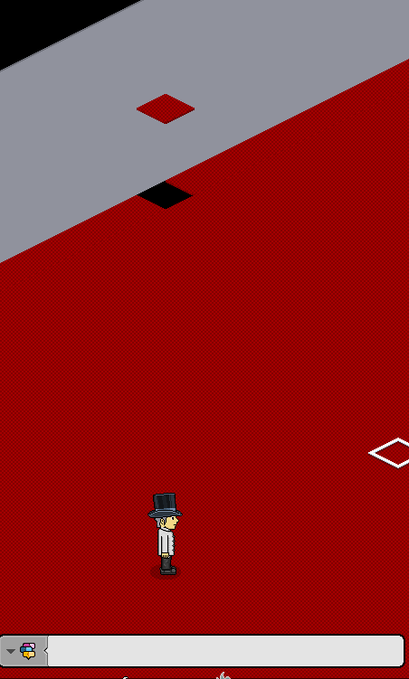 Tippsperre nach ein paar Nachrichten in einem Raum mit Extra-Spamschutz
|
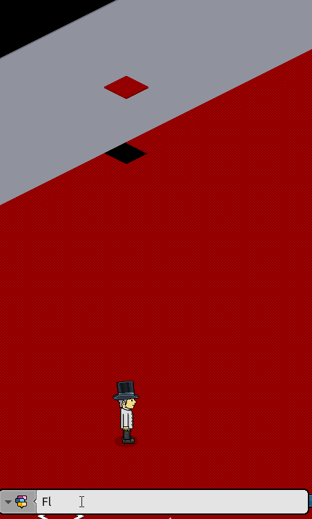 Im selben Raum wird die Tippsperre umgangen
|
Das ist für Spieler nützlich, die in einem Game sprachgesteuerte Elemente benutzen müssen und Tippsperren vermeiden wollen. Es ist wirklich egal, wie der Raumbesitzer dann den Spamschutz eingestellt hat. Beim sich selbst anflüstern gilt nur noch das Spamlimit, welches hoch genug ist und auch kein "tippi" verursacht. Beim Nachrichten-Wired ist es in gewisser Weise auch so, als würde man sich selbst anflüstern.
Aber nicht nur das Nachrichten-Wired kann einen Habbo zum Sprechen bringen. Es gibt bestimmte Möbel (siehe Bilder unten.
Da sind nur ein paar Beispiel-Möbel), die auf das reagieren, was ein Habbo sagt. Diese Möbel "antworten" mit einer Nachricht, die aus dem Habbo kommt, sobald der Habbo irgendetwas gesagt hat.
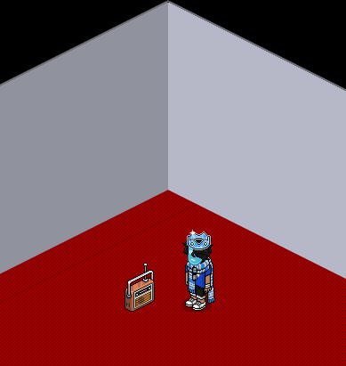
Pro Nachricht reagiert das Möbel auf eine Nachricht
Das ähnelt der Funktion des Bots, wenn der "Automatische Chat" deaktiviert ist. Bots antworten, wenn ein Habbo irgendetwas sagt. Der Unterschied ist, dass diese Nachricht vom Bot selbst kommt und sie manchmal einige Sekunden brauchen, um zu reagieren.
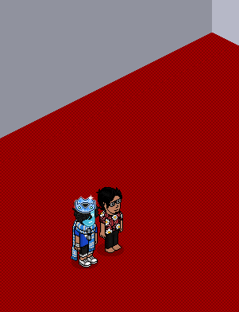
Der Bot antwortet dem Habbo mit einer Nachricht
Außerdem gibt es einen Unterschied in der Reichweite. Die Reichweite, in der der Bot sehen kann, was Habbos sprechen, ist abhängig von der Chatdistanz.
Die Möbel haben eine Reichweite von 3 mal 3 Felder.
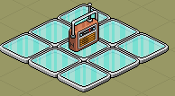
Das Möbel reagiert, wenn ein Habbo auf einer der Platten spricht
Weder Bots noch Möbel können aber auf geflüsterte Nachrichten reagieren. Wenn eine Möbel-Nachricht erscheint wird, das Sagt-etwas Wired ausgelöst. Damit kann eingestellt werden, dass ein Habbo teleportiert wird (oder wonach immer man sonst Lust hat), wenn er irgendetwas Ungeflüstertes gesagt hat. So muss man nicht alle möglichen Zeichen in ganz viele Sagt-etwas Wireds abspeichern. Selbst, wenn man das tun würde, könnte man immer noch keine Leerzeichen damit erkennen. Aber durch die Möbel-Nachricht wird das indirekt möglich. In den Sagt-etwas Wireds speichert man einfach alle Vokale ab wie oben gezeigt (Unter "Ein Bot sagt etwas"). Dann muss der Habbo ein Zeichen senden, worauf das Möbel mit einer Möbel-Nachricht reagiert. Das Sagt-etwas Wired erkennt, aus welchem Habbo diese Möbel-Nachricht kam und löst aus.
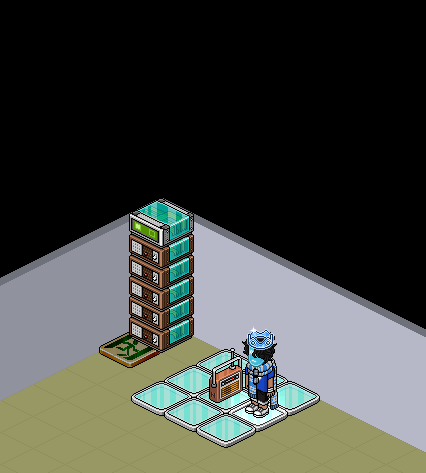
Das Radio zwingt den User Wörter zu sagen, die das Sagt-etwas Wired auslösen
Mit dem gesamten Wissen über das Thema, welches in dieser Lektion vermittelt wurde, können interessante und spannende Dinge eingestellt werden. Beispielsweise gab es Habbos, die einen Timer mit dem Sagt-etwas und Nachrichten Wired gebaut haben, sodass die übrige Zeit alle paar Sekunden als Nachricht ausgegeben wurde. Es wäre ein gutes Ziel, allein herauszufinden, wie das funktionieren könnte.
Zusammenfassung, was ist wichtig?
- Das Sagt-etwas Wired wird von Habbos, Bots oder Haustieren ausgelöst.
- Im Sagt-etwas Wired können bis zu 100 Zeichen gespeichert werden.
- Falls jemand die gespeicherten Zeichen sagt, wird das Gesagte wie beim Flüstern grau und kursiv.
- Bei “Auslösenden Habbo auswählen” kann eingestellt werden, ob das Wired auf alle User reagiert oder nur beim Raumbesitzer.
- Auf Commands wie :sit oder :idle reagiert der Auslöser nicht.
- Speichert man alle Vokale a, e, i, o, u einzeln in fünf Sagt-etwas Wireds ab, dann erzeugt man einen Mute-Bereich (ohne Bedingung im ganzen Raum), wo niemand (normale) Wörter sagen kann.
- Für einen Mute-Bereich, der nur einen Teil des Raumes stummen soll, wird die Bedingung: "Auslösender Habbo steht auf Möbelstück" benötigt.
- Um mehrere gleichzeitig zu stummen, müssen die Sagt-etwas Wireds in einem Stapel vorhanden sein.
- Das "Nachricht anzeigen" Wired wird verwendet, um einen Habbo eine Nachricht von bis zu 100 Zeichen anzuzeigen, die nur er sehen kann.
- Alle 5 Sekunden können sieben bis neun Nachrichten ausgegeben werden.
- Bestimmte Möbel reagieren auf Nachrichten von Habbos mit einer Nachricht, die dann aus dem Habbo kommt.